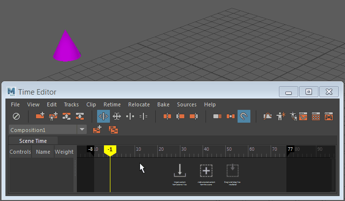

片段是时间编辑器的构建块。在时间编辑器中，所有可设置关键帧的对象（例如，角色、摄影机、物体、材质等）都有可能成为片段。如果可以为对象设置关键帧，则该对象可在时间编辑器中成为动画片段。
创建时间编辑器动画片段
您可以直接在视口中从简单的动画对象创建片段，如以下过程中所示。但是，如果动画对象较为复杂（或者具有任何相关的属性，如角色装备），请使用下面的“在大纲视图中从对象创建片段”过程。
在视口中从简单对象或属性创建动画片段
- 在视口中选择该对象/属性。
注： 在时间编辑器中创建动画片段时，请确保选择对象的整个层次，从而确保该片段合并到新片段中。否则，片段不会与所有动画合并，且无法播放。（如果要设置装备动画，请选择装备并使用包括所有关联属性。）
- 在时间编辑器中，从时间编辑器菜单栏中选择
 “从当前选择创建片段”(Create Clip from Selection)。
“从当前选择创建片段”(Create Clip from Selection)。
此时将显示一个片段，持续到动画结束为止。

若要在“大纲视图”(Outliner)中从对象创建片段，请执行以下操作：
- 当场景中具有可设置动画的对象（例如，角色装备或物体）时，打开大纲视图(Outliner)（），然后选择对象。
- 展开 timeEditor“源”(Sources)，可查看场景中的所有动画源。
- 使用鼠标中键将动画源拖动到时间编辑器中的动画轨迹上。
动画源驱动该对象。

有关动画片段的详细信息，请参见：
其他类型的时间编辑器片段
您还可以从音频文件中创建时间编辑器片段，这些文件可用于访问某些混合功能。您还可以导入单帧姿势并创建姿势片段，然后可以从中创建动画。最后，您可以从动画片段创建层片段，这样便可通过非破坏性方式在现有动画的顶部对新行为进行分层。
在时间编辑器中创建音频片段
将音频文件导入到时间编辑器以向动画添加音轨。
创建音频片段
- 在时间编辑器中，从时间编辑器菜单栏中选择“片段音频片段(Clip > Audio clip)。
- 在出现的文件浏览器中，导航到要用作时间编辑器片段的音频文件。
您也可以将音频文件拖动到时间编辑器的轨迹视图区域中，以创建音频轨迹。
有关详细信息，请参见将音频添加到时间编辑器。
在时间编辑器中创建姿势片段
姿势片段是捕捉到的单帧对象或属性状态，可供您用于创建动画。有关如何使用姿势片段的示例，请参见从姿势片段创建动画和在时间编辑器中设置动画的属性。
从简单对象或属性创建姿势片段
- 选择对象/属性。
- 在时间编辑器中，从时间编辑器菜单栏中单击
 “从当前选择创建姿势片段”(Create Pose Clip from Selection)。
“从当前选择创建姿势片段”(Create Pose Clip from Selection)。
还可以创建一帧长的姿势片段。您可以将此姿势片段与过渡融合以创建动画。请参见从姿势片段创建动画。
在时间编辑器中创建片段层
片段层是一个由动画层组成的片段。
创建片段层
- 在动画片段上单击鼠标右键，然后从“片段”(Clip)上下文菜单中选择“创建覆盖”(Create Override)或“创建相加”(Create Additive)。（不能为音频片段或姿势片段创建片段层。）
提示： 可以分组选择多个片段/组片段和/或适当的场景对象，然后创建层片段。
轨迹上的动画片段之上将显示一个灰色片段层。请参见时间编辑器“层片段”(Layer clip)上下文菜单。
在轨迹视图中拖动层片段以重新排列。请记住，对片段重新排序会影响片段解算（它也取决于融合模式和权重）。有关层片段选项，请参见层片段(Layer Clip)上下文菜单。
注： 在时间编辑器中通过层为 HumanIK 角色装备设置动画时，有一些特别注意事项。请参见在时间编辑器中为 HumanIK 角色设置动画。
有关片段层的详细信息，请参见：